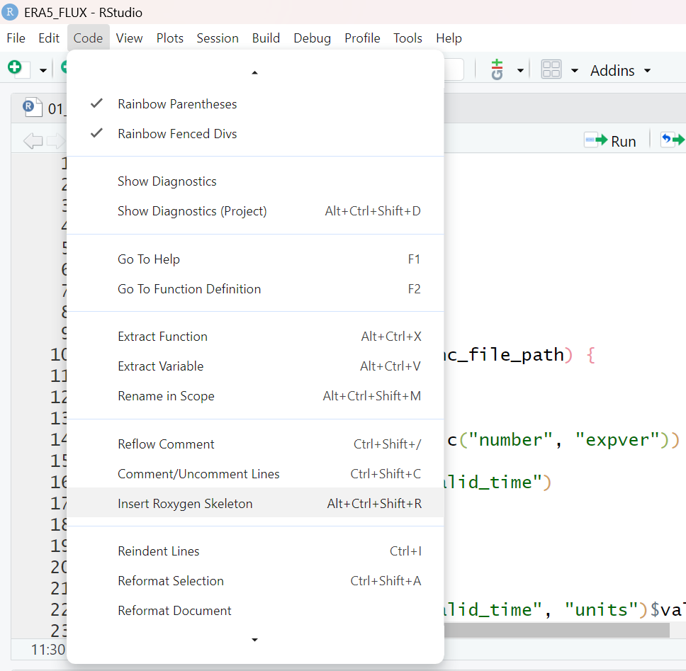

The primary objective of this repo is to improve the utility of ERA5 data at flux site locations.
Scripts are organized into the following groups
1. create df.sitemetadata file 00_sitemetadata
- df that contains site meta data (site code, lat, lon, start date, end data, variables needed)
2. pre-Download for Files _01
- day_padding (add 1 day to start and end dates for future time zone offset issues)
- utc_offset (add UTC offset to df.sitemetadata)
- get_land_proportion (pull land-sea_mask for one day)
- 01_ERA5_API (use ecmwfr package with df.sitemetadata)
3. Data Processing for ERA5 _02
02_csv_conversion: Takes directory as an argument and reformats ERA4 .nc data into csv format with the following characteristics.
- Uses two functions to reformat netcdf data:
- netcdf_df_formatter(nc_file_path)
- Input: (character) file path to a folder containing the netcdf files of one site.
- Output: (dataframe) of the characteristics:
- Datetime stamp column named “time”.
- UTC timezones convetered to local time.
- Time column formatted as yyyyMMddHHmm
- Variables names from ERA5 dataset maintained
- ERA5 units converted to Ameriflux units:
- Solar radiation (ssrd) from Jm-2 to Wm-2.
- Air Temperature (t2m) from Kelvin to celsius.
- Total precipitation (tp) from meters to millimeters.
- netcdf_to_csv(site_folder)
- Input: (character) file path to a folder containing the netcdf files of one site.
- Output: .csv file of netcdf data within site_folder.
- The .csv file is located within the site_folder and has the file name format: siteID_startYear_endYear_variableName.csv For example, US-Ho1_2001_2020_tp_t2m.csv
- SiteID is deetermined from lat and lon coordinates in df.sitemetadata.
- Each csv file starts from the first hour of a year (e.g., 2000-01-01 00:00) and ends with the last hour of a year (e.g., 2020-12-31 23:00).
- netcdf_df_formatter(nc_file_path)
4. Flux Data Merging_03
- Two functions to merge and blend ERA5 and FLUX data
- 03_01_merge_ERA5_FLUX: do interpolation of ERA5 data to ensure ERA5 and FLUX datasets share the same timestamp.
- 03_02_blend_ERA5_FLUX: blend ERA5 and FLUX datasets according to blending rules.
- 03_01_merge_ERA5_FLUX: do interpolation of ERA5 data to ensure ERA5 and FLUX datasets share the same timestamp.
- Input and output variables of the two functions
- input variables (character): filename_FLUX, filename_ERA5
- input variables (vector of character): varname_FLUX, varname_ERA5
- input variables (vector of character): blending_rules
- output variables: a dataframe with the original ERA5 and FLUX data and gap-filled data for each varname
- Requirement of these input variables
- varname_FLUX and varname_ERA5 should have the same length. These names of the same row should be matched.
- blending_rules should have the same length with varname_FLUX and varname_ERA5. users should give rules for each variable.
- options for blending_rules: “replace”, “lm”, “lm_no_intercept”, “automatic”
*scripts are provided for both python and R.
Function Documentation
Step 0: Enter into developer mode by running library(devtools) and then devtools::load_all() to make your functions available for developing.
Step 1: Click to anywhere inside your function.

Step 2: Go to Code -> Insert Roxygen Skeleton. This will populate your script with some template roxygen comments.

Step 3: Fill out the template roxygen comments. You can learn more about what to write in these comments here. Or you can view the function documentation in CarbonExchangeParameters as an example. Do not put anything under “@export”.

Notes: If you have sample data that you would like to use in your function examples, you can put them under inst/extdata/. Then you can reference your sample data with something like system.file("extdata", "your-file.nc", package = "ERA5Flux"). For functions that export a file, you will need to make sure to have a function argument that lets the user specify where they would like to export the file output. Then in the function example, you can just make the example export to a temporary folder with tempdir(). This is because CRAN does not allow functions that export something without letting the user decide where it goes. See netcdf_to_csv() for an example.
Step 4: Make sure your updated function script is under the “R” folder. Now render the documentation into an actual help page for the function using devtools::document(). This will generate a .Rd file inside the “man” folder. This becomes your function’s help page and you can now access it by typing ?your-function-name.
Step 5: Always remember to push your commits to GitHub!